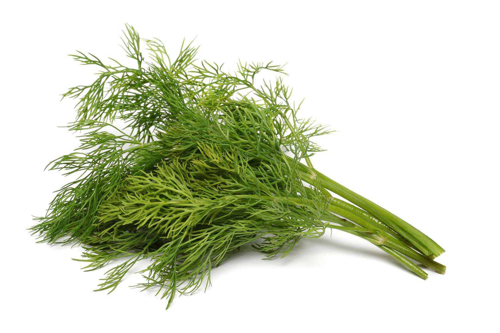

Smashed Cucumber
Origin: China Source: Family Recipe Category: Comfort Food / SnackMy mom taught me how to make this recipe. This is a common Chinese dish that can be enjoyed as a snack or a side dish.
Recipe Ingredients
- Cucumbers
- Sesame Seeds
- Salt
- Chinese Black Vinegar
- Red Pepper Flakes
- Sesame Oil
- Olive Oil
- Soy Sauce
Recipe Steps
- Cut the cucumbers into diagonal chunks and then smash them with the side of the knife.
- Drain the excess water from the smashed cucumbers and set aside.
- In a mixing bowl, mix salt, vinegar, soy sauce, vinegar,sesame oil, olive oil, and red pepper flakes.
- Mix together smashed cucumbers and previously made sauce.
- Place into fridge and sauce soak into smashed cucumber for 20-30 minutes.
- Eat as a snack or serve on top of rice!
Additional Food images

Salmon topped with Dill and Mayonaise
Origin: Unknown Source: Family Recipe Category: EntreeI created this recipe after seeing similar dishes on social media.
Recipe Ingredients
- Salmon
- Dill
- Mayonnaise
- Salt
- Pepper
- Lemon
- Vegetable Oil
- Garlic
Recipe Steps
- Chop dill into small pieces and mix with mayo in a small bowl
- Cut salmon into equal sized square pieces and lather with dill and mayo mixture
- Nince the garlic and place in oiled pan on med-high heat until garlic is aromatic.
- Place salmon into pan and pan fry until cooked, approximately 5 minutes per side.
- Add salt, pepper, and lemon to taste.
Additional Food images
Chinese Jiaozi
Origin: China Source: Family Recipe Category: Main Dish
Chinese dumplings (Jiaozi, 饺子) are stuffed parcels made of unleavened dough and savory fillings consisting of minced ingredients like meat, egg, tofu, or vegetables. They can be boiled, pan-fried or steamed.
Recipe Ingredients
- Flour
- Water
- Pork
- Cabbage
- Dumpling Wrappers
- Salt
- Chinese Vinegar
- Soy Sauce
Recipe Steps
- Blend together the pork, cabbage, and salt to create the dumpling filling.
- Wrap the filling in the dumpling wrappers and use water to create a tight seal.
- Boil wrapped dumplings in a pot of water until the dumplings start floating.
- Serve with chinese vinegar and/or soy sauce.
Additional Food images